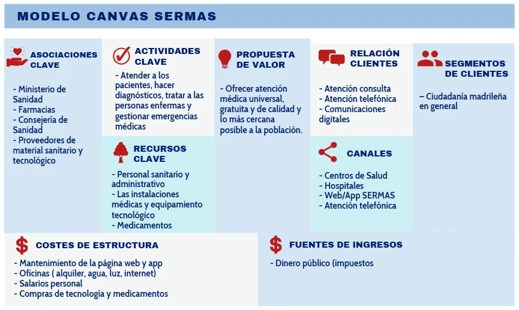
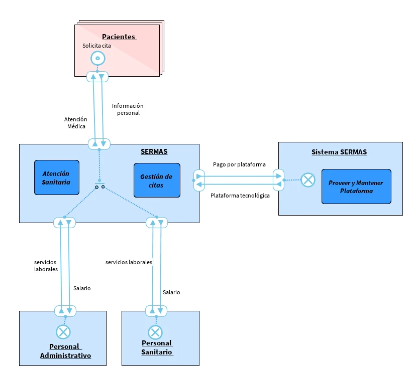
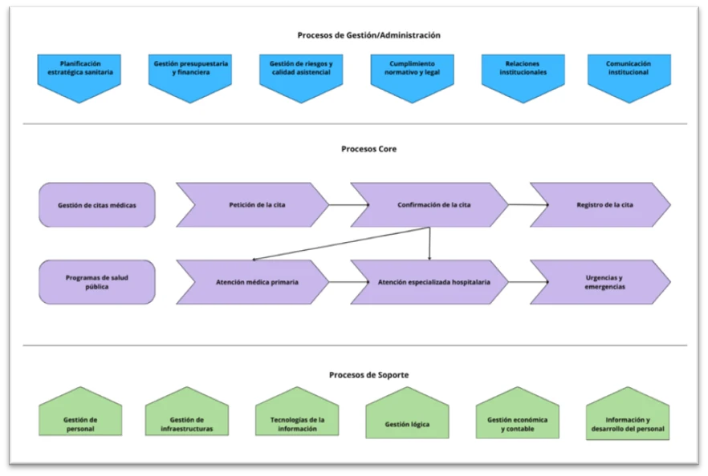

Cuadro de mando
Tiempo medio desde la solicitud hasta la confirmación, porcentaje de cancelaciones y huecos cubiertos a través de la lista de espera.
Universidad Rey Juan Carlos
Del proceso actual a una propuesta para gestionar mejor las citas del Servicio Madrileño de Salud.
Ingeniería de Procesos de Negocio
Identificación y análisis
La gestión de citas conecta al paciente con el sistema SERMAS, el personal administrativo y el personal sanitario. El proceso empieza con la solicitud y termina con la confirmación de la cita o una respuesta sobre la disponibilidad.



Descubrimiento y rediseño
Compara los modelos originales y selecciona una mejora para localizarla en el diagrama.
El modelo actual incluye la solicitud por web, app o teléfono, la confirmación y un recordatorio 24 horas antes.
Simulación · Datos ficticios
Prueba el recorrido de un paciente con la agenda completa. Una cancelación permite ofrecer el hueco a la primera persona en la lista de espera.
Ver este recorrido en el BPMNImplementación y monitorización
El personal administrativo necesitaría formación para gestionar devoluciones de llamada y excepciones. El sistema tendría que coordinar la agenda, la lista de espera y los avisos.
Tiempo medio desde la solicitud hasta la confirmación, porcentaje de cancelaciones y huecos cubiertos a través de la lista de espera.
Avisos al equipo responsable cuando la espera supere el umbral acordado o se acumulen citas sin atender.
Tras la cita, preguntar por la facilidad para reservar, cambiar o cancelar y por la valoración del servicio.